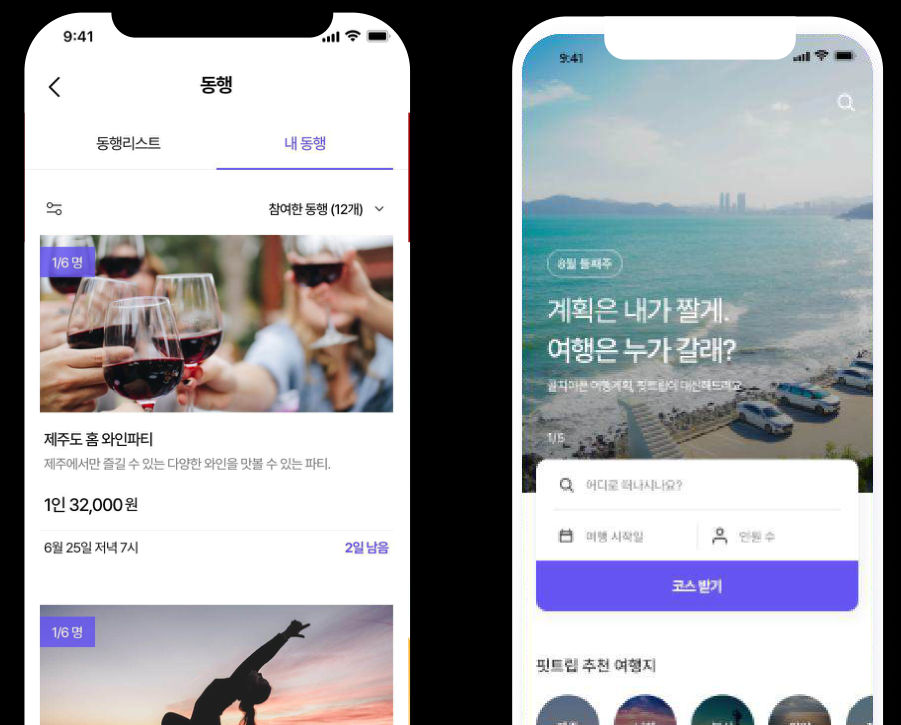

현지인이 여행 코스를 대신 짜주는 역경매 여행 플랫폼을 기획해 예비창업패키지 선정, 지원금 5,500만 원을 확보했습니다.
기여도
100%참여 인원 2명
역할
여행 서비스 기획 / PM
기간
2022.05 ~ (1년 1개월)
범위
모바일 웹, 앱, 어드민
역할 및 기여도
- 1IA와 기능 명세지도 API 연동 장소 DB 구조와 주요 기능 정의
- 2역경매 BM 설계여행객 요청에 가이드가 입찰, 에스크로 결제와 수수료
- 3여행 UX지도 기반 동선 시각화, 동행 모집, 일정 공동 편집
- 4운영과 출시가이드 자격 검증 어드민, QA, v1.0 스토어 배포
성과
- 5,500만 원한국관광공사 예비창업패키지 지원금
- 150만 원컨시어지 MVP 2주 매출
- 50명코스를 짜는 현지 플래너 모집
- 30명실제 유료 결제 고객
문제와 해결
기존 문제설계한 해결
- 여행지 정보를 직접 찾아 입력하는 피로감취향만 입력하면 현지인이 코스를 제안
- 기록용 도구라 수익 모델이 없음코스 거래 수수료 기반 C2C 비딩 모델
- 텍스트 일정표로는 동선 파악이 어려움지도 API 동선 시각화와 피드형 UI
- 일정을 캡처해 메신저로 공유하는 번거로움일정 초대와 실시간 공동 편집
서비스 화면

산출물
- 서비스 개요서
- IA와 기능 명세서
- 유저 플로우
- 역경매 매칭 로직
- 어드민 설계
- v1.0 배포